Вход в админку для первого подключения
- Подключите кабель провайдера в WAN порт роутера.
- При необходимости подключите устройство по LAN кабелю (например, в порт LAN1).
- Откройте в браузере
http://192.168.1.1.
- Логин:
root, пароль: 12345678.
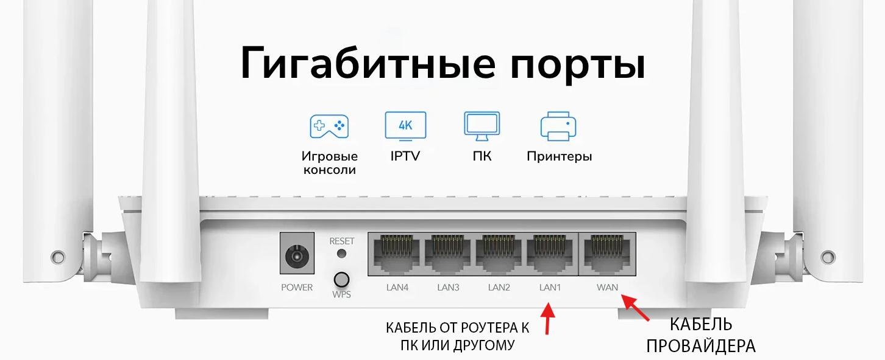
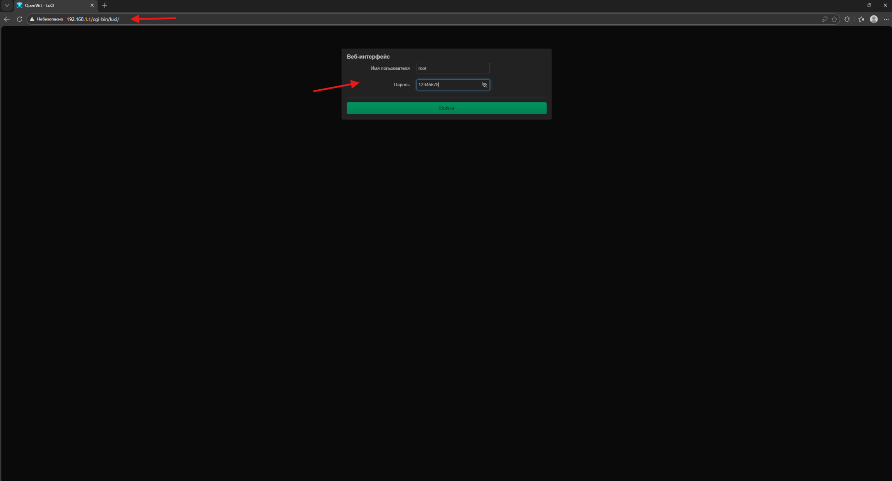
Как поменять тип подключения
- Перейдите в Сеть → Интерфейсы.
- Откройте настройки интерфейса WAN.
- Выберите протокол PPPoE и введите логин/пароль от провайдера.
- Нажмите Сохранить, затем Применить.
- Проверьте, что интернет-подключение стало активным.
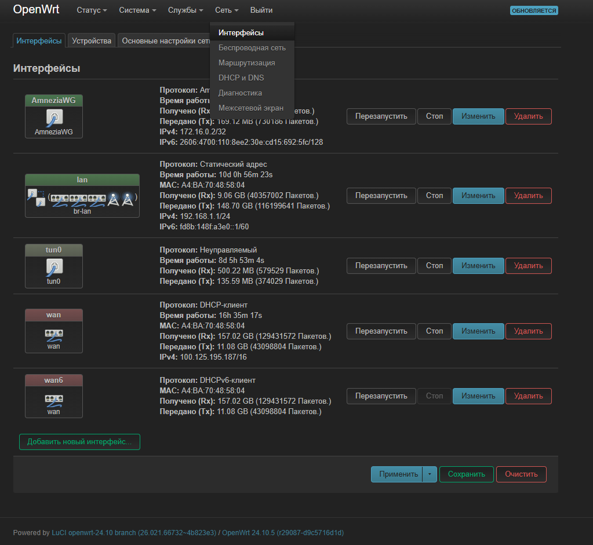
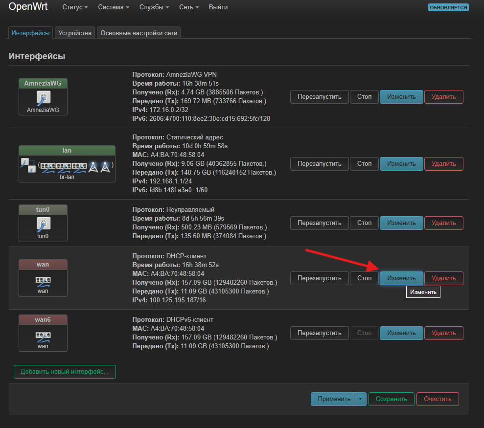
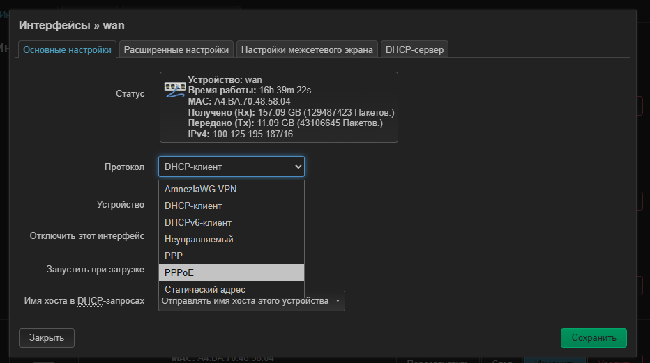
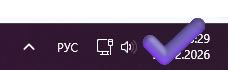
DHCP: не открывается страница логина провайдера
Позвоните провайдеру и сообщите, что вы заменили роутер. Обычно нужно обновить MAC-адрес на стороне провайдера.
Как поменять название Wi‑Fi и пароль
- Откройте Сеть → Беспроводная сеть.
- Нажмите Изменить для 2.4G и 5G сетей.
- Измените имя сети (SSID) и пароль.
- Сохраните и примените настройки.
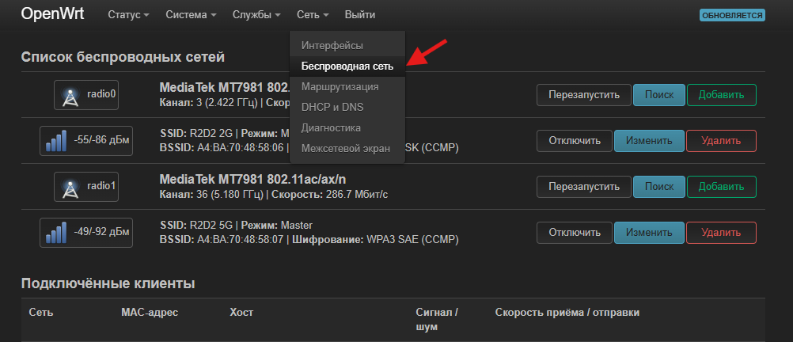
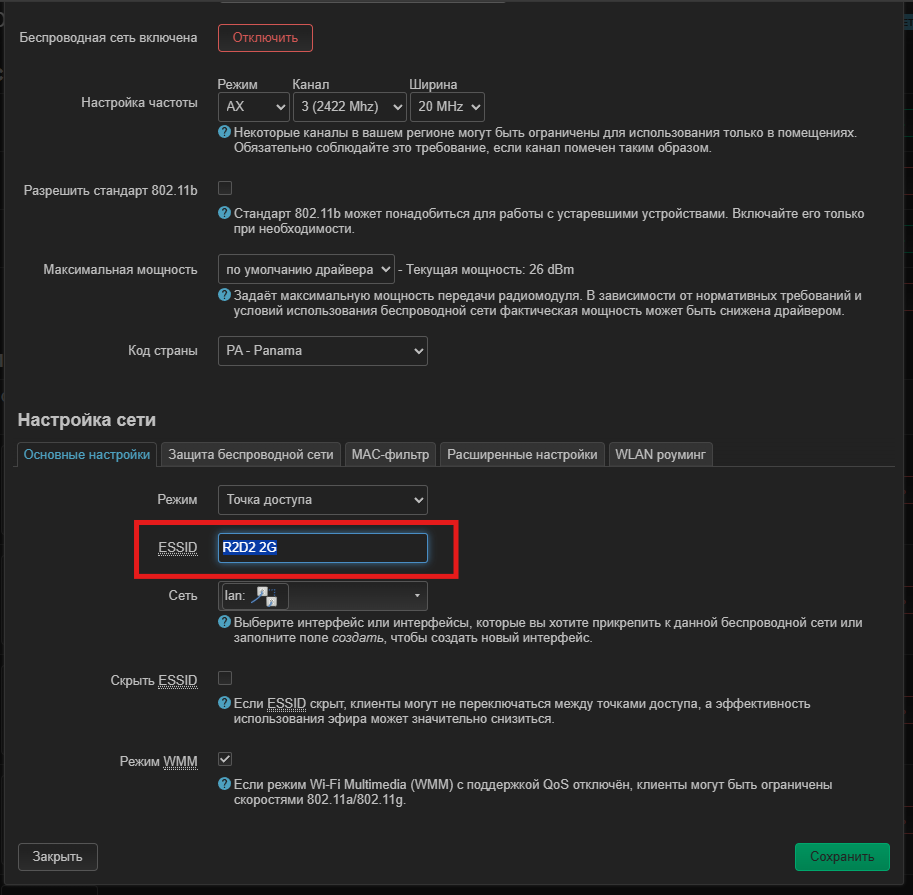
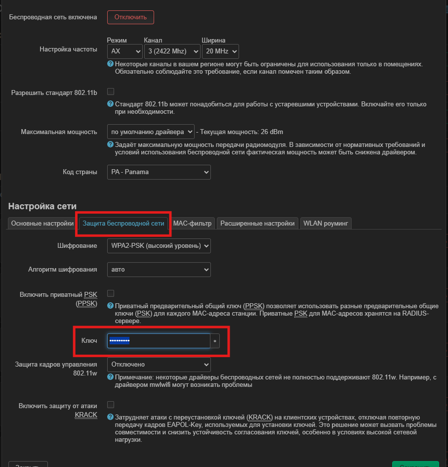
Как добавить свой сайт в обход
- Перейдите в Службы → podkop → Секции.
- В разделе «Тип пользовательского списка доменов» выберите Текстовый список.
- Добавьте домены в формате
ya.ru (без https://).
- Примените изменения. Если нужно, перезапустите podkop в разделе «Диагностика».
- Если сайт не открывается сразу, проверьте в режиме инкогнито или в другом браузере.
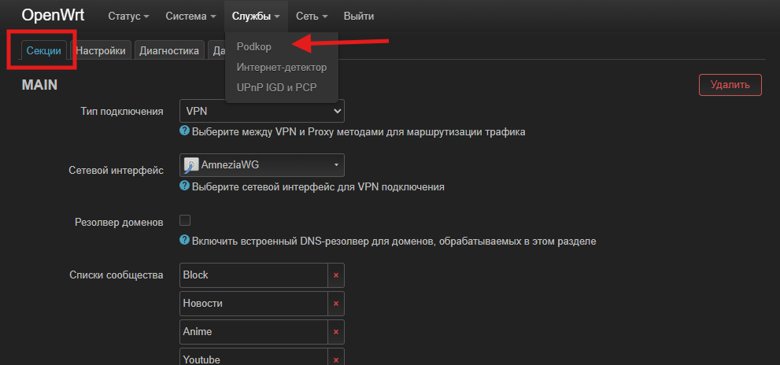
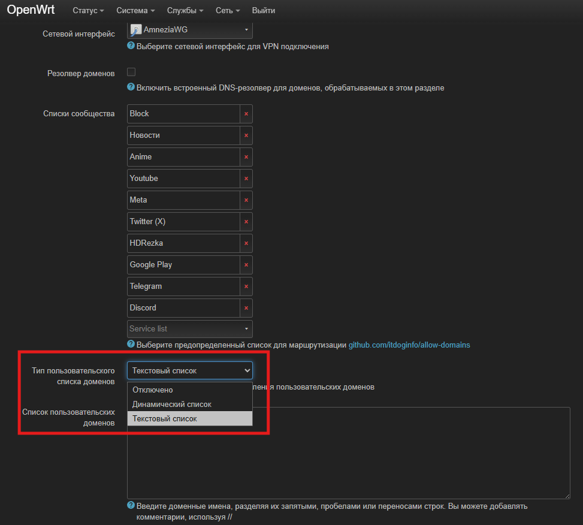
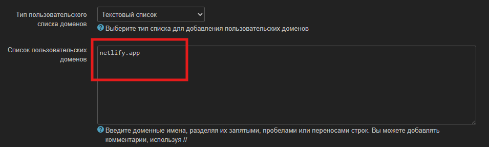
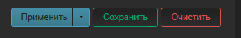
Как перезапустить AdguardVPN
- Откройте командную строку (
Win + R → cmd).
- Подключитесь к роутеру:
ssh root@192.168.1.1.
- При запросе ключа введите
yes, затем пароль роутера.
- Запустите команду:
/opt/adguardvpn_cli/adguardvpn-cli connect -l PL
После выполнения команду можно закрыть.
Как заменить изначальную настройку и поставить свой VPN
- Откройте Службы → podkop → Секции.
- Выберите тип подключения Proxy.
- Заполните параметры своего VPN (например, VLESS).
- Примените изменения.
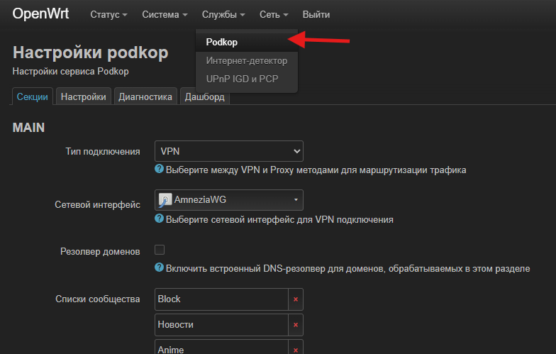
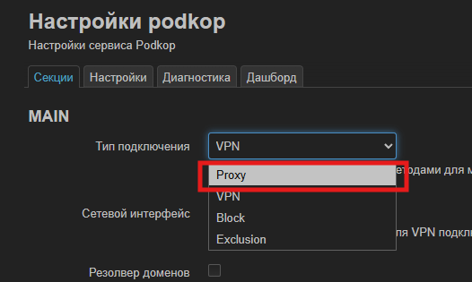
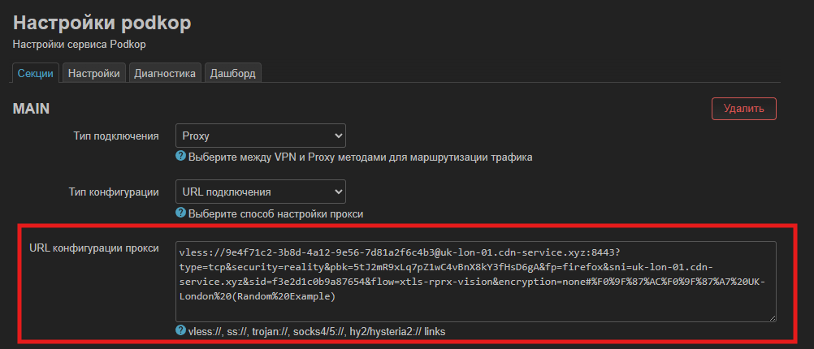
Amnezia не работает: как обновить конфиг
- Скачайте любой WARP-конфиг: warp-generator.github.io/warp.
- Перейдите в Сеть → Интерфейсы → AmneziaWG и нажмите «Изменить».
- Импортируйте содержимое скачанного конфигурационного файла.
- Нажмите «Импорт настроек» и примените изменения.
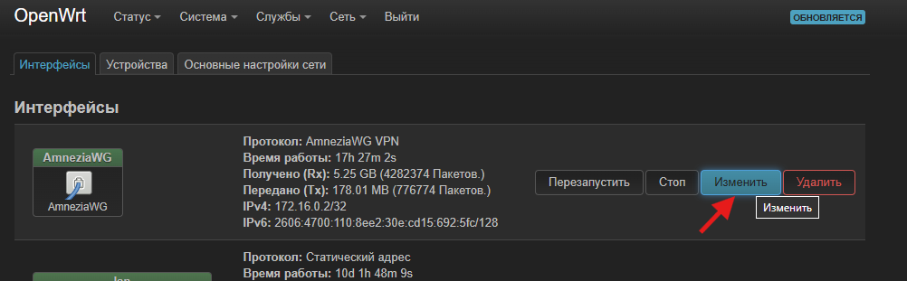
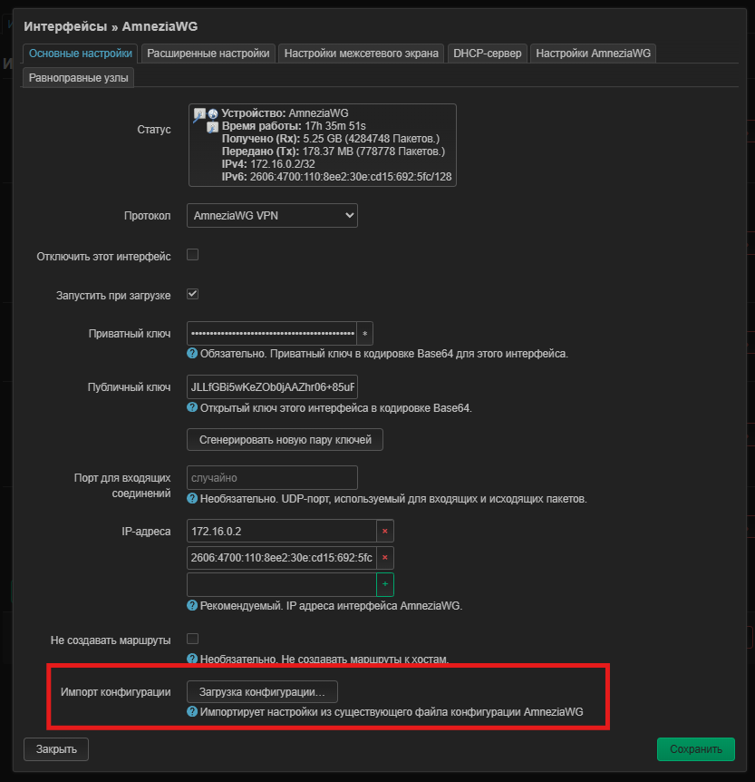